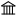

@arXiv 2407.21417Language Models: Dancing in Chains of Instruction and Faithfulness

Stanford University, Amazon
This research investigates the trade-off between instruction following and faithfulness in language models (LLMs) when trained on different datasets. The authors propose a novel method called RESET (Rejection Sampling for Continued Self-instruction Tuning) that aims to reconcile these two objectives. Unlike previous multi-task learning (MTL) approaches, RESET leverages a reject-sampling strategy based on self-instruction, which involves sampling generations from the model and then using external judges to rate their quality.
01:27
@arXiv 2407.21792AI Safety Benchmarks: Are We Just Measuring Smarts, Not Safety?
Center for AI Safety, University of Pennsylvania, UC Berkeley...
This research goes beyond intuitive arguments and uses empirical analysis to determine whether AI safety benchmarks are actually measuring distinct safety properties or simply reflecting general model capabilities.
01:57
@arXiv 2407.21130Bach Bot: Can a Computer Really Understand Harmony?
Princeton University, University of Michigan, Santa Fe Institute
This research uses hidden Markov models to automatically annotate Bach chorales, achieving an accuracy of 85% or greater in identifying chords and keys, without relying on human input. This differs from previous work that often used hand-tuned parameters based on expert knowledge.
02:16
@arXiv 2407.21170AI Tutor: Decomposed Prompting for Smarter Course Q&A
University of Toronto
This research proposes a question-answering system that uses decomposed prompting to classify and answer student questions on a course discussion board. Unlike previous work, this system leverages a large language model (LLM) to categorize questions into four types, allowing for tailored responses.
02:38
@arXiv 2407.20471Symmetry Breaking: When Neural Networks Get a Little Wild!
MIT
This paper introduces a new type of graph neural network that can learn and represent symmetry breaking within continuous groups. It builds on the existing E(3)NN framework by introducing relaxed weights, which allow for controlled symmetry breaking.
03:13
@arXiv 2407.20292Generative Models Get a Makeover: Renormalization Group to the Rescue!
University College London, Dresden University of Technology, University of Oxford
This paper introduces a new approach to generative modeling using the renormalization group (RG) to create scale-free models. Unlike previous work, it focuses on discrete state-space models, which are more efficient and easier to learn.
03:32
@arXiv 2407.20722SMC Gets a Memory Boost: Persistent Sampling for Bayesian Inference
UC Berkeley
This paper introduces persistent sampling (PS), an extension of sequential Monte Carlo (SMC) that retains particles from previous iterations, creating a growing, weighted ensemble. This allows for more accurate posterior approximations and lower-variance marginal likelihood estimates.
03:59
@arXiv 2407.20336Sun Off, Lights On: Turning Daytime Scenes Into Nighttime Dreams!
ETH Zurich, University of Toronto, KU Leuven...
This research introduces a novel physically-based method for simulating photorealistic nighttime images from daytime counterparts. Unlike previous data-driven approaches, this method explicitly models the 3D geometry, materials, and light sources of the scene, enabling more accurate and realistic nighttime simulations.
04:25
@arXiv 2407.20311Language Models: Not Just Memorizing, They're Actually Thinking!
CMU, Meta, Mohamed bin Zayed University of Artificial Intelligence
This research focuses on understanding how language models solve grade-school math problems by training them from scratch on a synthetic dataset. This approach allows the researchers to control the data and eliminate potential contamination from pre-trained models.
04:57
@arXiv 2407.20371AI Hiring Tools: Are They Biased Against Black Men?
University of Washington
This research investigates the biases of Massive Text Embedding (MTE) models, a specific type of large language model (LLM), when used for resume screening. Unlike previous work that focused on general LLMs or AI hiring tools, this study specifically examines MTEs and their potential for discrimination.
05:16
@arXiv 2407.20351LiteEFG: Solving Games Faster Than You Can Say "Checkmate!"
MIT
This research introduces LiteEFG, a Python library for solving extensive-form games (EFGs) that leverages a C++ backend for significant speedups compared to pure Python implementations. Unlike existing libraries, LiteEFG automatically handles the complex structure of imperfect-information games, simplifying the implementation process for researchers.
05:36
@arXiv 2407.20243Shrinking Embeddings: How to Make LLMs More Efficient Without Sacrificing Performance
Google
This research introduces Matryoshka-Adaptor, a novel tuning framework that customizes embeddings from Large Language Models (LLMs) to achieve substantial dimensionality reduction without compromising performance. Unlike previous work that focuses on Matryoshka properties during pre-training, this approach tunes embeddings after they are extracted from pre-trained LLMs.
05:54
@arXiv 2407.21686From Short Videos to Expressive Avatars: A 3D Gaussian Trick
Daegu Gyeongbuk Institute of Science and Technology, Meta
This research introduces ExAvatar, a 3D human avatar model that can be created from a short monocular video. Unlike previous methods that require 3D scans or RGBD images, ExAvatar utilizes a hybrid representation of surface meshes and 3D Gaussians to achieve expressive whole-body animation with novel facial expressions and poses.
This research introduces ShieldGemma, a suite of content moderation models built on Gemma 2, which are designed to identify and filter harmful content in both user input and LLM-generated output. The study distinguishes itself by focusing on harm-type level prediction, rather than just binary safe/unsafe classification, and by utilizing a novel synthetic data generation pipeline to reduce human annotation effort.
06:41
@arXiv 2407.21530Data Contamination: The Dirty Little Secret of AI Models
University of the Basque Country UPV/EHU, Bar Ilan University, Cohere...
This research compiles a database of documented cases of data contamination in NLP models, providing a structured and centralized resource for the community. It differs from previous work by focusing on collecting and analyzing real-world evidence of contamination, rather than just theoretical discussions.
07:04
@arXiv 2407.21077Coding LLMs: Evolving Instructions for Better Code!
Nvidia
This research introduces Genetic-Instruct, a method for generating synthetic coding instructions for LLMs. Unlike previous methods that focus on either mutation or crossover, Genetic-Instruct combines both operations in a scalable pipeline.
This research explores the impact of increasing the number of attempts (samples) during inference, rather than focusing solely on model size or training data. It investigates how this approach affects the coverage of problems solved, particularly in domains like coding and formal proofs where solutions can be automatically verified.
08:17
@arXiv 2407.21687Forgetful AI? Not This Time! Dynamic Queries Give Object Detection a Memory Boost.
Tsinghua University, Chinese Academy of Sciences
This paper introduces dynamic object queries for incremental object detection, a technique that expands the model's capacity to learn new classes without forgetting old ones. Unlike previous methods that rely on knowledge distillation or exemplar replay, this approach dynamically adds new queries to the model, allowing it to adapt to evolving data streams.
08:41
@arXiv 2407.20254EEG Mamba Strikes: A Multi-Task Brainwave Classifier That's Both Smart and Speedy!
Peking University
This research introduces EEGMamba, a novel EEG classification network that integrates Spatio-Temporal-Adaptive (ST-Adaptive) modules, Bidirectional Mamba, and Mixture of Experts (MoE) into a unified framework for multiple tasks. Unlike previous models that focus on single tasks, EEGMamba can handle EEG data from various tasks simultaneously, adapting to different signal lengths and channel counts.
09:13
@arXiv 2407.20584Pruning LLMs: A New Trick to Make Big Models Tiny and Smart!
Tsinghua University
This research proposes a novel training pipeline called Adaptive Sparse Trainer (AST) for semi-structured sparse models. Unlike previous methods that prune models after training, AST retrains dense pretrained LLMs into sparse ones, allowing the model to adaptively select better sparsity patterns during training.
09:38
@arXiv 2407.21236GNUMAP: Unsupervised Learning Gets a Graph-ical Makeover!
University of Chicago
This research introduces GNUMAP, a parameter-free approach to unsupervised dimensionality reduction that combines the UMAP framework with graph neural networks (GNNs). Unlike previous GNN-based methods that rely heavily on hyperparameter tuning, GNUMAP offers a more robust and reliable solution for real-world applications.
10:05
@arXiv 2407.21009AI Makes Math Questions So Hard, Even AI Can't Solve Them!
Mila – Quebec AI Institute, Université de Montréal, Princeton University...
This research proposes a novel framework for generating challenging math questions by combining the strengths of LLMs with human expertise. Unlike previous work that relies solely on LLMs or human experts, this approach leverages the metacognitive abilities of LLMs to extract core skills from existing datasets and then uses these skills to generate questions that require the application of multiple skills.
10:30
@arXiv 2407.20253EEG Data Augmentation: A Diffusion Model's Random Reassembly Trick!
Peking University
This research proposes a new data augmentation method for EEG classification networks that randomly reassembles original and generated EEG data to create "vicinal" data. This differs from previous methods that directly incorporated generated data into the training set, which often led to unstable performance.
10:54
@arXiv 2407.20756Vision Models Get a Synthetic Makeover: 100k Fake Images, Real Results!
Peking University
This paper introduces SynthVLM, a novel data synthesis pipeline for Vision Language Models (VLLMs). Unlike existing methods that generate captions from images, SynthVLM uses advanced diffusion models to generate images from captions, creating precisely aligned image-text pairs.
11:17
@arXiv 2407.21011Crafty CLEFT: A Language Model That's Smart, But Not Too Big for Medical Images
Yale University
This research introduces CLEFT, a new method for contrastive language-image pre-training that uses a large language model (LLM) but focuses on fine-tuning only a small portion of the model's parameters. This approach aims to improve performance while reducing the computational resources needed for training, making it more suitable for medical applications where data is often limited.
11:41
@arXiv 2407.20508Spiking Neurons Go Graphing: A New Way to Learn from Networks
Guangdong Institute of Intelligence Science and Technology, Tsinghua University, Hong Kong Polytechnic University...
This research introduces a novel framework for integrating spiking neural networks (SNNs) with graph representation learning, addressing the limitations of previous work in handling non-Euclidean data and exploring the impact of spiking dynamics on graph learning. The paper proposes a spatial-temporal feature normalization (STFN) technique to enhance training efficiency and model stability, offering a comprehensive spike-based modeling framework for graph tasks.
12:16
@arXiv 2407.21034Recommender Systems: Watermarked and Ready to Rumble!
Nanyang Technological University, University of Queensland
This paper introduces a novel watermarking technique called Autoregressive Out-of-distribution Watermarking (AOW) specifically designed for recommender systems. Unlike previous methods that focus on computer vision or classification tasks, AOW leverages the sequential nature of recommendations to embed a watermark sequence into the model's memory.
12:40
@arXiv 2407.21507Swin Transformer: Image Communication Gets a Semantic Makeover!
Northwestern Polytechnical University, Samsung AI Center, Xidian University...
This research proposes a federated learning (FL) strategy for a Swin Transformer-based semantic communication system (FSSC). Unlike previous work, which often relies on centralized approaches, FSSC leverages a multi-user FL framework to train a global model without directly accessing users' private data.
13:13
@arXiv 2407.21057LLMs Can't Tell Us Everything: New Research Makes Them More Honest About What They Don't Know!
CMU
This research focuses on quantifying uncertainty in long-form text generation from LLMs, specifically by ensuring that uncertainty guarantees are valid not only across the entire dataset but also within identifiable subgroups of prompts. This differs from previous work that primarily focused on marginal uncertainty guarantees.
13:41
@arXiv 2407.21402Heart Rate from Your Face? New AI Can Filter Out the Noise!
National Tsing Hua University
This research proposes a new method for unsupervised rPPG estimation that focuses on identifying and removing interference from facial videos. Unlike previous methods that rely on assumptions about rPPG signals, this approach directly models interference features and uses them to derive de-interfered rPPG signals.
14:12
@arXiv 2407.20273Learning Material Behavior Without a Physics Textbook: AI Cracks the Code of Elasticity
ETH Zurich
This research introduces a new machine learning approach called uLED, which learns the constitutive relations of hyperelastic materials solely from displacement data. Unlike previous methods, uLED does not require stress data or information about boundary forces, making it particularly suitable for in-situ applications.
14:38
@arXiv 2407.21126Predicting the Future: How AI Sees the Road Ahead, One Grid Cell at a Time
Stanford University, UC Riverside
This research introduces a new framework for predicting the future occupancy of a scene using LiDAR data. Unlike previous methods that focus on deterministic predictions within the grid cell space, this approach leverages the latent space of a generative model to capture the stochastic nature of the environment.
15:12
@arXiv 2407.20399LiDAR's New Trick: Seeing in the Dark with a Neighborhood Watch!
UC Berkeley, Purdue University
This research delves into the theoretical limitations of the rank-ordered mean (ROM) filter, a common technique for removing noise in single-photon LiDAR systems. It then proposes a new method, the neighborhood consensus filter, which leverages the temporal closeness of signal timestamps to improve depth estimation accuracy.
15:34
@arXiv 2407.20962Music to My Eyes: A New Dataset for Training AI to Understand Videos with Soundtrack
The Hong Kong University of Science and Technology, Peking University
This research introduces a new dataset, MMTrail, that focuses on trailer videos, incorporating both visual and audio information, including music descriptions. Unlike previous datasets that primarily rely on visual captions, MMTrail aims to capture the inherent relationship between visual and audio elements, particularly music.
15:59
@arXiv 2407.20272LLMs on a Diet: New Framework Makes Large Language Models Slim and Speedy!
Peking University
This research focuses on building an efficient inference framework specifically for early-exit LLMs, a type of LLM that can skip layers during inference to save time and resources. This is different from previous work on LLM inference frameworks, which were designed for traditional LLMs that always run through all layers.
16:20
@arXiv 2407.21740Factor Analysis Gets a Contrastive Makeover: Learning with a Twist!
Xidian University, MIT, University of Texas at Austin
This paper introduces a new framework called Contrastive Factor Analysis (CFA) that combines traditional Factor Analysis (FA) with contrastive learning. Unlike FA, which directly models observation data, CFA models the relationship matrix, representing the relationship between positive and negative samples.
16:44
@arXiv 2407.20447AI Agent Makes Prescriptive Decisions, No Data Science Degree Required!
MIT, IBM Research
This research focuses on making prescriptive AI accessible to users without data science expertise by developing a domain-adaptable conversational agent called PrecAIse. Unlike previous work that relied heavily on in-context learning, PrecAIse incorporates prompt tuning for improved accuracy and a fully automated pipeline for generalization to new datasets.
17:08
@arXiv 2407.20455Portrait Editing: From Fake Friends to Feature-Preserving Fun!
University of Washington
This paper proposes a novel training-based method for portrait editing that leverages automatically generated paired data to learn desired editing while preserving subject features. Unlike previous training-free methods, this approach doesn't rely on inverting images into a model's latent space, which can lead to editability issues and feature loss.
17:32
@arXiv 2407.20859LLM Agents: Not So Smart After All? New Attack Makes Them Go Bonkers!
CISPA Helmholtz Center for Information Security, NetApp, Microsoft...
This research focuses on a new type of attack against LLM agents that aims to disrupt their normal functioning by inducing malfunctions, rather than focusing on overtly harmful or policy-violating actions.
17:57
@arXiv 2407.20754Querying Inconsistent Knowledge Bases: When Rules Break, Costs Take Over!
University of Bordeaux, École Normale Supérieure
This research introduces a novel approach to querying inconsistent knowledge bases by assigning weights to both axioms and assertions, allowing for a cost-based evaluation of interpretations. This differs from previous work that primarily focused on repairing inconsistent ABoxes while leaving the TBox untouched.
18:23
@arXiv 2407.21757Movie Magic: A Language Model That Gets the Plot Twists
National University of Singapore, Meta, DSO National Laboratories
This research introduces MovieSeq, a multimodal language model that represents videos as interleaved sequences of images, plots, subtitles, and video history. This approach differs from previous work by allowing for flexible multimodal instructions, enabling the model to interact with videos in a more comprehensive and nuanced way.
18:51
@arXiv 2407.20798AI Agents Get a Diffusion Makeover: Learning Faster with Synthetic Experiences!
Imperial College London, Google DeepMind
This research introduces Diffusion Augmented Agents (DAAG), a framework that uses diffusion models to modify visual observations, creating synthetic experiences for training reinforcement learning agents. This differs from previous work by leveraging diffusion models for autonomous, geometrically and temporally consistent data augmentation, enabling more efficient learning and transfer.
19:18
@arXiv 2407.21124Zero-Shot Health Predictions: AI That's Smarter Than Your Doctor (Maybe)
Massachusetts General Hospital, Harvard Medical School, AGH University of Science and Technology...
This research introduces ETHOS, a transformer-based model that predicts future health trajectories without requiring task-specific training or labeled data. This differs from previous work that often relies on fine-tuning for specific tasks.
19:41
@arXiv 2407.21439Multimodal Models Get a Reranking Makeover: Fighting Noise with Knowledge and a Pinch of Visual Uncertainty!
IDEA Research, Peking University
This research tackles the "multi-granularity noisy correspondence" problem in multimodal retrieval-augmented generation. Unlike previous work, it introduces a knowledge-enhanced reranking method using an instruction-tuned MLLM to filter out irrelevant images. Additionally, it employs noise-injected training to improve the model's robustness to visual noise.
20:08
@arXiv 2407.20266AI Models on a Diet: Low-Rank Decomposition Gets a Speed Boost
Huawei Technologies
This research focuses on improving the efficiency of low-rank decomposition (LRD) for compressing AI models. Unlike previous work that primarily focused on compression, this paper explores strategies to accelerate both training and inference by optimizing rank selection and introducing layer freezing and merging techniques.
This research investigates the performance of LLMs on enterprise data tasks, specifically text-to-SQL and semantic column type detection, highlighting the challenges and potential solutions for effectively utilizing LLMs in enterprise settings. This differs from previous work that primarily focused on LLMs' performance on public datasets.
21:03
@arXiv 2407.20635Robots Learn From Their Mistakes, And It's Hilarious!
UC Berkeley
This research introduces SOAR, a system that allows robots to autonomously improve their instruction-following skills by leveraging internet-scale knowledge from vision-language models (VLMs) and learning from their own experiences. This differs from previous work that often relies on costly human-provided demonstrations or hand-specified tasks.
21:23
@arXiv 2407.21791Deep Learning for Options Trading: A No-Frills Approach to Making Bank
University of Oxford
This research introduces a novel approach to options trading strategies using deep learning models. Unlike traditional methods that rely on specific market dynamics or assumptions about option pricing models, this approach directly learns mappings from market data to optimal trading signals.
21:49
@arXiv 2407.21669Empathy Bots Get a Synthetic Makeover: New Data Makes Them More Human
Peking University, Chinese Academy of Sciences
This research proposes a novel method for generating high-quality empathetic data using a three-step pipeline. Unlike previous work that relies heavily on human-labeled data, this approach leverages large language models (LLMs) to automatically generate and curate empathetic responses.
This paper proposes a novel data assimilation algorithm called SOAD (State-Observation Augmented Diffusion) that leverages generative models to handle nonlinear physical and observational models. Unlike previous score-based assimilation methods, SOAD's marginal posterior distribution is proven to match the real posterior under mild assumptions.
22:39
@arXiv 2407.21783Llama 3: The AI Herd That's Smarter Than Your Average Cow
Meta
This paper introduces Llama 3, a new family of language models that are trained on a significantly larger dataset than previous versions, including more code, math, and multilingual data. The paper also explores the use of system-level safety measures to mitigate potential risks associated with large language models.
23:04
@arXiv 2407.21216MRI Segmentation: A Continual Learning Journey with a Memory for Features!
Technical University of Darmstadt, Stanford University, The Hessian Center for Artificial Intelligence
This research introduces a distribution-aware replay strategy for continual MRI segmentation. Unlike previous methods that rely on data rehearsal or parameter regularization, this approach uses a variational autoencoder (VAE) to model the distribution of features learned by the UNet, enabling pseudo-rehearsal without storing actual data.
23:31
@arXiv 2407.21046Masked Language Models: The Fast and the Furious (of Text Generation)
CMU, Google
This paper introduces a theoretical framework for analyzing Generative Masked Language Models (GMLMs), a non-autoregressive approach to text generation. It differs from previous work by focusing on the statistical efficiency of learning and the speed of inference, relating these aspects to the mixing time of a corresponding Markov Chain.
23:59
@arXiv 2407.21721Can AI Hear and See What You Can't? Open-Vocabulary Audio-Visual Segmentation is Here!
UC Berkeley, CMU, Peking University...
This research introduces a new task called "open-vocabulary audio-visual semantic segmentation," which goes beyond recognizing pre-defined categories. It aims to segment and classify sounding objects in videos, even those never seen or heard during training. This differs from previous work that focused on closed-set assumptions, where models could only identify objects they were trained on.
This research introduces a traceable question-answering approach for explaining AI model outputs using LLMs and an external knowledge repository. This differs from previous work by integrating feature importance and contrastive explanations into the LLM's responses.
Beijing Tongren Hospital, Capital Medical University, Beihang University...
This research uses a deep learning model to predict myopia progression in children using only fundus images and baseline refraction data, unlike previous methods that rely on extensive data and multiple visits.
This research focuses on the subjective evaluation of AI-generated progressive metal music in symbolic format, specifically guitar tablature, using a mixed methods approach. This differs from previous work by focusing on a less explored genre and using a more nuanced evaluation method.
25:38
@arXiv 2407.20441Multi-Agent Learning: Faster Than a Speeding Bullet (Even With Delays!)
University of Padua, Princeton University, North Carolina State University...
This paper analyzes the convergence of an asynchronous multi-agent TD learning algorithm, AsyncMATD, which incorporates bounded delays in communication between agents. This differs from previous work by providing finite-time convergence guarantees for asynchronous MARL under Markovian sampling, a more realistic scenario than the i.i.d. sampling assumption used in prior studies.
26:02
@arXiv 2407.21072LLMs: Smarter Than We Think, Or Just Better at Taking Tests?
M42
This research delves into the variability of accuracy metrics used to evaluate large language models (LLMs) by analyzing how different calculation methodologies impact performance. It focuses on multiple-choice question-answering tasks and compares the results of four popular LLMs across various benchmarks.
26:24
@arXiv 2407.21341Potato-Vision: Deep Learning Helps Harvesters See the Whole Spud
The University of Tokyo, University of Bonn
This research builds upon previous work using RGB-D cameras to estimate potato yield. However, it introduces a novel 3D shape completion network called CoRe++ that can accurately reconstruct the full 3D shape of potatoes from partially captured images, even when they are occluded. This is a significant improvement over previous methods that relied on multiple cameras or time-consuming laser triangulation techniques.
26:49
@arXiv 2407.21712Conversational AI's New Trick: When to Stop Googling!
University of Sheffield, University of Liverpool, University of Aberdeen...
This research explores the need for external knowledge in every turn of a conversation, proposing a "gate" mechanism to decide when to retrieve information. Unlike previous work that assumes constant knowledge augmentation, this study investigates the adaptive use of external knowledge.
27:18
@arXiv 2407.20276AI's Got a Gambling Problem: Random Guessers Beat Sophisticated Algorithms!
IBM
This research introduces a "random guesser test" to evaluate the rationality of AI systems in sequential decision-making scenarios. Unlike previous work that focuses on regret analysis, this study emphasizes the importance of exploration and highlights the potential for AI systems to favor overly low-risk options.
27:55
@arXiv 2407.21488Hourglass of Data: How a Simple Trick Makes Generative Retrieval Smarter
Central South University, Tsinghua University, JD.com
This research identifies and addresses a "hourglass" phenomenon in Residual Quantization-based Semantic Identifiers (RQ-SID) used in generative retrieval. This phenomenon, characterized by overly concentrated codebook tokens in intermediate layers, hinders the full utilization of generative retrieval methods. The paper proposes two methods to mitigate this issue, improving codebook utilization and addressing token long-tail distributions.
28:22
@arXiv 2407.21001AI's Got a Gender Bias: Can Robots Tell a Man From a Woman Doing the Dishes?
Sharif University of Technology, École Polytechnique Fédérale de lausanne (EPFL), IDIAP research institute...
This research focuses on a specific type of bias in vision-language models (VLMs) called "Gender-Activity Binding (GAB) bias." It investigates how VLMs associate activities with specific genders, even when the activity is performed by someone of the opposite gender. This is different from previous work that has looked at gender bias in VLMs more generally.
28:49
@arXiv 2407.20893ECG Diagnosis Gets a Brain Boost: MambaCapsule Makes Heart Health Transparent!
Zhejiang University, Stanford University, Shanghai University
This research introduces MambaCapsule, a deep neural network for ECG arrhythmia classification that focuses on explainability. Unlike previous models that prioritize performance, MambaCapsule provides not only a confidence score but also signal features, making the diagnostic process more transparent.
29:14
@arXiv 2407.20281DNNs on a Diet: Semantic Slicing for Leaner, Meaner Models
Nanyang Technological University, Huazhong University of Science and Technology
This research introduces a new technique called "semantic slicing" that identifies and manipulates individual neurons within a deep neural network (DNN) for model maintenance tasks. Unlike previous work that focused on layer-level manipulation, this approach allows for more precise control over the model's structure and behavior.
29:48
@arXiv 2407.21225AI Makes Quantum Compiling a Breeze: New Method Speeds Up Unitary Synthesis
IBM
This research explores the use of AI methods for approximate compiling of unitaries, focusing on the use of fixed two-qubit gates and arbitrary single-qubit rotations. The authors propose AI-driven approaches for template selection and parameter prediction, which are then refined through gradient descent to achieve the desired fidelity. This approach differs from previous work by utilizing deep learning models for both template selection and parameter prediction, rather than relying solely on exhaustive search methods.
30:12
@arXiv 2407.20446Event-Based Vision: A Dataset for Cars That See Like Humans!
University of Michigan
This research introduces a new dataset, MEVDT, specifically designed for event-based vision, a technology inspired by the human retina. Unlike previous datasets, MEVDT provides synchronized streams of event data and grayscale images, along with detailed annotations for object detection and tracking.
30:35
@arXiv 2407.21025Market Makers: High-Frequency Trading's New Game of Speed and Complexity
Princeton University
This research provides a theoretical analysis of reinforcement learning (RL) in high-frequency market making, focusing on the effects of sampling frequency on the algorithm's performance. Unlike previous work that primarily focused on methodological research, this paper explores the trade-off between learning error and complexity when adjusting the sampling frequency.
30:57
@arXiv 2407.21263X-Ray Vision: UMAP Uncovers Hidden Errors in Medical Datasets
Princeton University
This research uses the UMAP algorithm to identify outlier images in large radiological datasets, focusing on the unique clusters formed by these anomalies. This approach differs from previous work by leveraging the graph-based structure of UMAP to visualize and analyze outliers, rather than relying solely on statistical methods.
31:19
@arXiv 2407.21220DeepBaR: Sneaky Backdoors for Deep Learning, One Faulty ReLU at a Time!
ETH Zurich
This research introduces DeepBaR, a novel backdoor attack that exploits faults in deep neural networks during training, specifically targeting ReLU activation functions. Unlike previous work that focused on manipulating weights or training data, DeepBaR leverages the vulnerability of ReLU functions to inject backdoors by causing them to output zero.
31:47
@arXiv 2407.21118KV-Cache Compression: Squeezing LLMs with Low-Rank Magic!
National Yang Ming Chiao Tung University, University of Washington
This paper introduces Palu, a novel KV-Cache compression framework that utilizes low-rank projection to reduce the size of the KV-Cache. Unlike previous methods that focus on quantization or token eviction, Palu explores the hidden dimensions of KV tensors, where redundancy often occurs.
32:08
@arXiv 2407.20241NudgeRank™: AI Makes Your Steps Count (and Your Health Improve!)
University of Washington
This research introduces NudgeRank™, a recommender system that uses a novel combination of graph neural networks and a knowledge graph to deliver personalized health nudges. Unlike previous work that relies on rule-based systems or focuses on a single health goal, NudgeRank™ dynamically generates nudges for multiple health outcomes, considering individual preferences and contextual states.
32:34
@arXiv 2407.20257Video Question Answering: It's Not Just About What, But Why and When!
CMU
This research focuses on improving Video Question Answering (VQA) models by addressing the limitations of existing approaches. Unlike previous methods that rely on either single-frame or complete-video information, this paper proposes a novel approach that leverages a smart aggregation of sub-sampled information to enhance performance.
32:57
@arXiv 2407.20535DeepSpeech Models: Cochlear Implants Get a Brain Boost!
Columbia University, DeepMind
This research uses a deep neural network model, DeepSpeech2, to simulate how cochlear implants process speech signals. Unlike previous work that focused on modeling the cochlea itself, this study investigates the entire auditory processing hierarchy, from sound to phonemes to words.
33:23
@arXiv 2407.21748Robot Diagnosis: When Your Machine Learns to Feel Sick
Stanford University
This research introduces a framework for diagnosing distribution shifts in real-time systems using multiple martingale-based monitors. Unlike previous work that focused on detecting shifts in system inputs, this approach monitors both inputs and outputs, enabling more precise identification of the underlying cause of the shift.
33:49
@arXiv 2407.21185Amelia: The AI That Predicts Airport Chaos (and Maybe Saves Lives)
Carnegie Mellon University
This research introduces Amelia-48, a large-scale dataset of airport surface movement data, and Amelia-TF, a transformer-based model trained on this dataset to predict aircraft trajectories. Unlike previous work, this study focuses on generalizability across multiple airports, addressing the lack of publicly available datasets and the need for models that can adapt to different airport layouts and traffic patterns.
34:13
@arXiv 2407.21243Diffusion Models Get a Smart Corrector: Informed Correctors Boost Discrete Sampling!
Stanford University, Google, Microsoft
This research introduces a new family of "informed correctors" for discrete diffusion models, which leverage information learned by the model to more effectively counteract discretization error during sampling. This approach differs from previous work that relied on standard forward-backward correctors, which often proved ineffective in fixing errors, especially in absorbing state diffusion.
34:29
@arXiv 2407.20466Reinforcement Learning Gets a Speed Boost: Pre-trained Critics Make Agents Learn Faster!
University of Washington, Western Washington University, Kennesaw State University...
This research introduces a novel approach to accelerate reinforcement learning by leveraging pre-trained critic value functions from multiple environments. Unlike traditional methods that require extensive retraining, this approach integrates existing knowledge to enable agents to adapt swiftly to new settings.
34:55
@arXiv 2407.21070Can an Octopus Learn Science? A Playful Debate on AI and Understanding
University of Toronto
This paper presents a lecture and activity designed to challenge the argument put forth by Bender and Koller in their 2020 ACL paper. It focuses on the counterarguments to their claim that a language model, like an octopus, can't truly understand the world based solely on data.
35:15
@arXiv 2407.20444Sampling from Unnormalized Densities: A Neural JKO with a Rejection Twist!
University College London, Free University of Berlin
This paper proposes a new sampling method that combines continuous normalizing flows (CNFs) with rejection-resampling steps based on importance weights. This approach aims to overcome local minima and slow convergence issues often encountered in Wasserstein gradient flows (WGFs) for multimodal distributions.
35:48
@arXiv 2407.20529LLMs: Not So Smart After All? New Research Uncovers Their Hidden Weaknesses!
Microsoft
This research goes beyond simply identifying vulnerabilities in LLMs and proposes two novel mitigation strategies: "Model Editing" and "Chroma Teaming." Model Editing focuses on modifying the LLM itself to improve its behavior, while Chroma Teaming brings together different teams (red, blue, green, and purple) to work collaboratively on LLM security.
36:13
@arXiv 2407.20267SMILES, But Make It Fashion: A New Foundation Model for Chemical Language
IBM
This research introduces a new family of encoder-decoder foundation models for chemical language, pre-trained on a curated dataset of 91 million SMILES samples from PubChem. This differs from previous work by focusing on a larger, more carefully curated dataset and incorporating a Mixture-of-Experts approach for scalability.
36:35
@arXiv 2407.21054AI Gets a Heart: New Research Makes Machines Understand Your Feelings
University of Toronto, William & Mary
This research introduces a new task called "Sentiment Reasoning" for both speech and text. It focuses on analyzing the attitude expressed through human voice, going beyond simple sentiment polarity. This is different from previous work that primarily focused on text-based sentiment analysis.
37:12
@arXiv 2407.21273Ultrasound Segmentation Gets a Confidence Boost with MSU-Net!
CMU
This research introduces MSU-Net, a multi-stage ensemble approach for training U-Nets to improve uncertainty estimation in ultrasound image segmentation. Unlike previous single-model architectures, MSU-Net leverages a decorrelation maximization method to select diverse ensemble members, resulting in more accurate and reliable predictions.
37:39
@arXiv 2407.21191GenRec: Recommending Your Next Favorite Thing, One Masked Item at a Time!
University of Michigan, University of Cambridge
This research proposes GenRec, a generative model for personalized sequential recommendation that utilizes a masked item prediction objective for both pretraining and finetuning. Unlike previous methods that rely on manually designed prompts, GenRec learns sequential patterns directly from the user-item interaction data.
38:09
@arXiv 2407.21347Deep Learning's New Shuffle: Privacy-Preserving Gradients Go Block-by-Block!
CMU
This research introduces a new algorithm called Differentially Private Block-wise Gradient Shuffle (DP-BloGS) for deep learning. Unlike traditional DP-SGD, which adds noise to all gradients uniformly, DP-BloGS takes a parameter-wise approach, allowing for different privacy levels for different parts of the model.
This research introduces MetaOpenFOAM, a framework that uses multiple AI agents to automate CFD simulations using natural language input. Unlike previous work, this framework leverages the MetaGPT assembly line paradigm and Langchain's Retrieval-Augmented Generation (RAG) technology to break down complex tasks into manageable subtasks.
38:56
@arXiv 2407.21317Pathology's New BFF: Foundation Models are Here to Help!
The University of Tokyo
This research focuses on the application of Foundation Models (FMs) in pathology, specifically highlighting their potential to address the challenges of annotation cost and limited public datasets. Unlike traditional AI models, FMs are trained on massive datasets and can be adapted to a wide range of tasks, making them more efficient and versatile.
39:30
@arXiv 2407.21638AI Radiologists Need a Second Opinion: Auditing for Accuracy in Report Generation
University of Oxford
This research introduces a novel quality control framework for AI-generated radiology reports. Unlike previous work that focuses on improving the accuracy of the reports themselves, this study proposes an independent auditing system using auxiliary components to assess the reliability of the generated content.